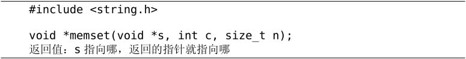
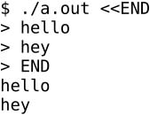
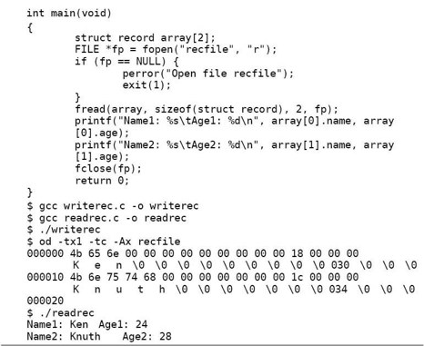
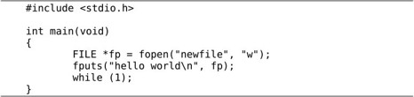

在前面的各章中我们已经见过C标准库的一些用法，总结如下：
⦁ 我们最常用的是包含stdio.h，使用其中声明的printf函数，这个函数在libc中实现，程序在运行时要动态链接libc共享库。
⦁ 在例3.1中用到了math.h中声明的sin和log函数，使用这些函数需要动态链接libm共享库。
⦁ 在第8.2节用到了stdlib.h中声明的rand函数，还提到这个头文件中定义的RAND_MAX常量，在例8.5中用到了stdlib.h中声明的srand函数和time.h中声明的time函数。使用这些函数需要动态链接libc共享库。
⦁ 在第18.2节讲了stdlib.h中声明的exit函数，使用这个函数需要动态链接libc共享库。
⦁ 在第11.6节用到了assert.h中定义的assert宏，在第20.4节我们看到了这个宏的一种实现，它的实现需要调用stdio.h和stdlib.h中声明的函数，所以使用这个宏也需要动态链接libc共享库。
⦁ 在第15.2.4节提到size_t类型在stddef.h中定义，还提到stdint.h中定义一些类型名，在第22章提到NULL指针和ptrdiff_t类型也在stddef.h中定义。
⦁ 在第23.1节介绍了stdlib.h中声明的malloc和free函数以及string.h中声明的strcpy和strncpy函数，使用这些函数需要动态链接libc共享库。
⦁ 在第23.6节介绍了stdarg.h中定义的va_list类型和va_arg、va_start、va_end等宏定义，并给出了一种实现，这些宏定义的实现并没有调用库函数，所以不依赖于某个共享库，这一点和assert不同。
总结一下，Linux平台提供的C标准库包括：
⦁ 一组头文件，定义了很多类型和宏，声明了很多库函数和全局变量。这些头文件放在哪些目录下取决于不同的Linux发行版和编译器版本，在我的系统上，stdarg.h和stddef.h位于/usr/lib/gcc/i486-linux-gnu/4.4.3/include目录下，stdio.h、stdlib.h、time.h、math.h、assert.h位于/usr/include目录下。C99标准定义的头文件有24个，本书只介绍其中最基本、最常用的几个。
⦁ 一组库文件，提供了库函数和全局变量的定义。大多数库函数在libc共享库中，有些库函数在另外的共享库中，例如数学函数在libm中。在第19.4节讲过，通常libc共享库是/lib/libc.so.6，而我的系统启用了hwcap机制，libc共享库是/lib/tls/i686/cmov/libc.so.6。
本章集中介绍一些最基本和最常用的库函数（也包括一些不属于C标准但在UNIX平台上很常用的函数），写这一章是为了介绍字符串操作和文件操作的基本概念和方法，而不是为了写一本C标准库函数的参考手册，Man Page已经是一本很好的手册了，读者学完这一章之后在开发时应该查阅Man Page，而不是把我这一章当参考手册来翻，所以本章不会面面俱到介绍所有的库函数。很多技术书的作者给自己的书太多定位，既想写成一本入门教程，又想写成一本参考手册，我觉得这样不好，读者过于依赖技术书就失去了看真正的手册的能力。
程序按功能划分可分为数值计算、符号处理和I/O操作三类，符号处理程序占相当大的比例，符号处理程序无处不在，编译器、浏览器、Office套件等程序的主要功能都是符号处理。无论多复杂的符号处理都是由各种基本的字符串操作组成的，本节介绍如何用C的库函数做字符串赋初值、取长度、拷贝、连接、比较、搜索、分割等基本操作。
24.1.1 给字符串赋初值

memset函数给一段内存（从s所指的地址开始的n个字节）赋初值，把每个字节都填充为c的值。通常调用memset时传给c的值是0，把一块内存区清零。例如定义char buf[10];，如果它是全局变量或静态变量则自动初始化为0（位于.bss段），如果它是函数的局部变量则初值不确定，可以用memset(buf, 0, 10)清零，由malloc分配的内存初值也是不确定的，也可以用memset清零。
为什么规定参数c的类型是int呢？C标准说memset函数要把参数c转换成unsigned char型再填充到每个字节中，那为什么不直接规定参数c是unsigned char型呢？这个问题很难说清楚，参考文献[6]也没有解释，我认为主要是历史原因。网上有几种说法，我列在这里供读者自己判断，如果你不是像我一样Paranoid，没兴趣追究这个，可以直接跳到下一小节。
一种说法认为和Integer Promotion有关。在Old Style C的时代调用函数不必声明函数原型，由于编译器不知道参数类型，char型参数都要提升为int型，Integer Promotion规则就是这么来的。现在的C语言虽然可以声明函数原型，但仍然保留了Old Style C的语法和Integer Promotion规则，以前的函数接口也保留了下来，所以本来应该是char型的参数都写成int型，而我们自己定义新的函数接口就不必遵循这个惯例了。
另一种说法认为，规定参数为int型是为了传字符常量方便，因为字符常量也是int型的，比如调用memset(buf, 'A', 10)。C标准库中像这样的函数有很多，比如稍后要讲的strchr、strrchr、fputc等，再比如ctype.h中声明的字符处理函数：
这些函数都带一个字符参数，参数类型都是int，第一组函数判断某个字符是否属于某个字符类，第二组函数做大小写字母的相互转换，比如调用isalpha('+')判断'+'是不是字母，调用toupper('a')把小写字母'a'转成大写。另外，C标准规定传给这些函数的参数可以是EOF，EOF是一个特殊的值，它的类型是int而不是char，如果转换成char型会丢失信息（在第24.2.5节详细解释），所以参数类型必须是int。
24.1.2 取字符串的长度
strlen函数返回s所指的字符串的长度。该函数从s所指的第一个字符开始找'\0'字符，一旦找到就返回，返回的长度不包括'\0'字符在内。例如定义char buf[] ="hello";，则strlen(buf)的值是5。注意，如果定义char buf[5] = "hello";，则调用strlen(buf)是危险的，会造成数组访问越界。
24.1.3 拷贝字符串
在第23.1节中介绍了strcpy和strncpy函数，拷贝以Null结尾的字符串，strncpy还带一个参数指定最多拷贝多少个字节，另外注意strncpy并不保证目标缓冲区以'\0'结尾。现在介绍memcpy和memmove函数，准确地说，这两个函数不是拷贝字符串，而是拷贝固定的字节数。
memcpy函数从src所指的内存地址拷贝n个字节到dest所指的内存地址，和strncpy不同，memcpy并不是遇到'\0'就结束，而是一定会拷贝完n个字节。我们可以得出这几个库函数的命名规律，以str开头的函数操作以Null结尾的字符串，而以mem开头的函数则不关心'\0'字符，或者说这些函数只是把参数看作n个字节，并不看作字符串，因此参数的指针类型是void *而非char *。
memmove也是从src所指的内存地址拷贝n个字节到dest所指的内存地址，虽然叫move但其实也是拷贝而非移动。但是和memcpy有一点不同，memcpy的两个参数src和dest所指的内存区间如果重叠则无法保证正确拷贝，而memmove却可以正确拷贝。假设定义了一个数组char buf[20] = "hello world\n";，如果想把其中的字符串往后移动一个字节（变成"hhello world\n"），调用memcpy是无法保证正确拷贝的：
例24.1 错误的memcpy调用
在有些系统上可能跑出hhhllooworrd这样的结果。如果把代码中的memcpy改成memmove则可以保证正确拷贝。memmove可以这样实现：
借助于一个临时缓冲区temp，即使src和dest所指的内存区间有重叠也能正确拷贝。思考一下，如果不借助于临时缓冲区能不能正确处理重叠内存区间的拷贝？
用memcpy为什么会得到hhhllooworrd这个奇怪的结果呢？根据这个结果猜测的一种可能的实现是：
在32位的x86平台上，每次拷贝1个字节需要一条指令，每次拷贝4个字节也只需要一条指令，为了提高拷贝的效率，我们先处理完零头然后4个字节4个字节地拷贝。注意这个实现并不正确，把void *指针转成int *指针来访问应该考虑对齐的问题，请读者自己实现一个更完善的版本。
C99的restrict关键字
我们来看一个和memcpy/memmove类似的问题。下面的函数将两个数组中对应的元素相加，结果保存在第三个数组中。
如果这个函数要在多处理器的计算机上运行，编译器可以做这样的优化：把这一个循环拆成两个循环，一个处理器计算i值从0到31的循环，另一个处理器计算i值从32到63的循环，这样两个处理器可以同时工作，使计算时间缩短一半。但是这样的编译优化能保证得出正确结果吗？假如result和x所指的内存区间是重叠的，result[0]其实是x[1]，result[i]其实是x[i+1]，这两个处理器就不能各干各的事情了，因为第二个处理器的计算过程依赖于第一个处理器的最终计算结果，这种情况下编译优化的结果是错的。这样看来编译器是不敢随便做优化了，那么多处理器提供的并行性就无法利用，岂不可惜？为此，C99引入restrict关键字，如果程序员把上面的函数声明为void vector_add(const double *restrict x, const double *restrict y, double *restrict result)，就是告诉编译器可以放心地对这个函数做优化，由程序员负责保证这些指针所指的内存区间互不重叠。
由于restrict是C99引入的新关键字，目前Linux的Man Page还没有更新，所以都没有restrict关键字，本书的函数原型都取自Man Page，所以也都没有restrict关键字。但在C99标准中库函数的原型都在必要的地方加了restrict关键字，在C99中memcpy的原型是void *memcpy(void * restrict s1, const void * restrict s2, size_t n);，就是告诉调用者，这个函数的实现可能会做些优化，编译器也可能会做些优化，传进来的指针不允许指向重叠的内存区间，否则结果可能是错的，而memmove的原型是void *memmove(void *s1, const void *s2, size_t n);，没有restrict关键字，说明传给这个函数的指针允许指向重叠的内存区间。在restrict关键字出现之前都是用自然语言描述哪些函数的参数不允许指向重叠的内存区间，例如在C89标准的库函数一章开头提到，本章描述的所有函数，除非特别说明，都不应该接收两个指针参数指向重叠的内存区间，例如调用sprintf时传进来的格式化字符串和结果字符串重叠，诸如此类的调用都是非法的。本书也遵循这一惯例，除了像memmove这样的函数特别说明之外，一般都不允许两个指针参数指向重叠的内存区间。
关于restrict关键字更详细的解释可以查阅参考文献[29]。
字符串的拷贝也可以用strdup(3)函数，这个函数属于POSIX标准但并不属于C标准。
这个函数调用malloc动态分配内存，把字符串s拷贝到新分配的内存中然后返回。用这个函数省去了事先为新字符串分配内存的麻烦，但是用完之后要记得调用free释放新字符串的内存。
24.1.4 连接字符串
strcat把src所指的字符串连接到dest所指的字符串后面，例如：
调用strcat函数后，缓冲区s的内容没变，缓冲区d中保存着字符串"foobar"，注意原来"foo"后面的'\0'被连接上来的字符串"bar"覆盖掉了，"bar"后面的'\0'仍保留。
strcat和strcpy有同样的问题，调用者必须确保dest缓冲区足够大，否则会导致缓冲区溢出错误。strncat函数通过参数n指定一个长度，就可以避免缓冲区溢出错误。注意这个参数n的含义和strncpy的参数n不同，它并不是缓冲区dest的长度，而是表示最多从src缓冲区中取n个字符（不包括结尾的'\0'）连接到dest后面。如果src中前n个字符没有出现'\0'，则取前n个字符再加一个'\0'连接到dest后面，所以strncat总是保证dest缓冲区以'\0'结尾，这一点又和strncpy不同，strncpy并不保证dest缓冲区以'\0'结尾。例如：
24.1.5 比较字符串
memcmp从前到后逐个比较缓冲区s1和s2的前n个字节（不管里面有没有'\0'），如果s1和s2的前n个字节全都一样就返回0，如果遇到不一样的字节，s1的字节比s2小就返回负值，s1的字节比s2大就返回正值。
strcmp把s1和s2当做字符串比较，从前到后逐个比较每个字符，结束时有两种可能：
1．如果两个字符串完全相同，同时遇到'\0'字符，那么返回0。
2．如果在比较过程中遇到不同的字符，那么把两个字符相比较返回正值或负值。如果在一个字符串遇到'\0'，比另一个字符串先结束，也属于这种情况，这时把'\0'和另一个字符串中对应的字符相比较返回正值或负值。
按照上面的比较准则，"ABC"比"abc"小，"ABCD"比"ABC"大，"123A9"比"123B2"小。
strncmp的比较结束条件是：要么比较完n个字符结束（类似于memcmp），要么当遇到不同的字符或者当一个字符串比另一个先遇到'\0'时结束（类似于strcmp）。例如，strncmp("ABCD", "ABC", 3)的返回值是0，而strncmp("ABCD", "ABC", 4)的返回值是正值。
这两个函数和strcmp/strncmp类似，但在比较过程中忽略大小写，'A'和'a'认为是相等的。这两个函数不属于C标准，是POSIX标准定义的。
24.1.6 搜索字符串
strchr在字符串s中从左到右查找字符c，找到它第一次出现的位置就返回，返回的指针就指向这个位置，如果找不到字符c就返回NULL。strrchr和strchr类似，但是返回字符c最后一次出现的位置，函数名中间多了一个字母r可以理解为Reverse。
strstr在一个长字符串中从前到后找一个子串（Substring），找到子串第一次出现的位置就返回，返回值指向子串的开头，如果找不到就返回NULL。这两个参数名很形象，在干草堆haystack中找一根针needle，按中文的说法叫大海捞针，显然haystack是长字符串，needle是要找的子串。
搜索子串有一个显而易见的算法，可以用两层循环，外层循环把haystack中每个字符的位置依次假定为子串的开头，内层循环从这个位置开始逐个比较haystack和needle的每个字符是否相同。想想这个算法最多需要做多少次比较？其实有比这个算法高效得多的算法，有兴趣的读者可以查阅参考文献[16]第32章。
24.1.7 分割字符串
很多文件格式或协议格式中会规定一些分隔符，例如/etc/passwd文件中保存着系统的账号信息：
每条记录占一行，也就是说记录之间的分隔符是换行符，每条记录又由若干个字段组成，这些字段包括用户名、密码、用户id、组id、个人信息、主目录、登录Shell，字段之间的分隔符是:号。解析这样的字符串需要根据分隔符把字符串分割成几段，C标准库提供的strtok函数可以很方便地完成分割字符串的操作。tok是Token的缩写，分割出来的每一段字符串称为一个Token。
参数str是待分割的字符串，delim是分隔符，可以指定一个或多个分隔符，strtok遇到其中任何一个分隔符就会分割字符串，看下面的例子。
例24.2 strtok
执行结果是：
结合这个例子我们看看strtok是怎样分割字符串的：冒号是分隔符，把"root:x::0:root:/root:/bin/bash:"这个字符串分隔成"root"、"x"、""、"0"、"root"、"/root"、"/bin/bash"、""等几个Token，但是空字符串的Token直接忽略而不返回。第一次调用时要传字符串的首地址给strtok的第一个参数，以后每次调用只要传NULL给第一个参数就可以了，strtok函数自己会记住上次处理到字符串的什么位置（显然这是通过strtok函数里的一个静态指针变量记住的）。
用gdb跟踪这个程序，会发现str字符串被strtok不断修改，每次调用strtok把str中的一个分隔符改成'\0'，分割出一个小字符串，并返回这个小字符串的首地址。
刚才提到在strtok函数中应该有一个静态指针变量记住上次处理到字符串的什么位置，所以不必每次调用都把字符串的当前处理位置传给strtok。但在函数中使用静态变量是不好的，这样的函数是不可重入的（可重入性的概念请查阅参考文献[31]的10.6节），所以POSIX标准定义了一个不使用静态变量的strtok_r函数（这个函数不属于C标准），调用者需要自己分配一个指针变量来维护字符串的当前处理位置，每次调用时要传这个指针变量的地址给strtok_r的第三个参数，告诉strtok_r从哪里开始处理，strtok_r返回时再把新的处理位置写回这个指针变量中（这是一个Value-result参数）。strtok_r末尾的r表示可重入（Reentrant）。关于strtok_r的用法Man Page上有一个很好的例子：
例24.3 strtok_r
a/bbb///cc;xxx:yyy:这个字符串有两级分隔符，一级分隔符是:号或;号，把这个字符串分割成a/bbb///cc、xxx、yyy三个子串，只有第一个子串中有二级分隔符，二级分隔符是/斜线，第一个子串被进一步分割成a、bbb、cc三个二级子串。由于strtok_r不使用静态变量，而是要求调用者自己保存字符串的当前处理位置，所以这个例子可以在分割一级子串的过程中穿插着分割二级子串。建议读者用gdb的display命令跟踪argv[1]、saveptr1和saveptr2，以理解strtok_r的工作方式。
Man Page的BUGS部分指出了用strtok和strtok_r函数需要注意的问题：
⦁ 这两个函数要改写字符串以达到分割的效果。
⦁ 这两个函数不能用于分割字符串字面值，因为试图改写.rodata段会产生段错误。
⦁ 在做了分割之后，字符串中的分隔符就丢失了，就被'\0'覆盖了。
⦁ strtok函数使用了静态变量，它不是线程安全的，必要时应该用可重入的strtok_r函数，线程安全的概念请查阅参考文献[31]的12.5节。
1．出于练习的目的，strtok和strtok_r函数非常值得自己动手实现一遍，在这个过程中不仅可以更深刻地理解这两个函数的工作原理，也为理解“可重入性”和“线程安全”这两个重要概念打下基础。
2．解析URL中的路径和查询字符串。动态网页的URL末尾通常带有查询，例如：http://www.google.cn/search?complete=1&hl=zh-CN&ie=GB2312&q=linux&meta=http://www.baidu.com/s?wd=linux&cl=3
比如上面第一个例子，http://www.google.cn/search是路径部分，?号后面的complete=1&hl=zh-CN&ie=GB2312&q=linux&meta=是查询字符串，由五个“key=value”形式的键值对组成，以&隔开，值可以是空字符串，比如这个例子中的键meta对应的值是空字符串。
现在要求实现一个函数，传入一个带查询字符串的URL，首先检查输入格式的合法性，然后对URL进行切分，将路径部分和各键值对分别传出，请仔细设计函数接口以便传出这些字符串。如果函数中有动态分配内存的操作，还要另外实现一个释放内存的函数。完成之后，为自己设计的函数写一个Man Page。
24.2.1 文件的基本概念
我们已经多次用到了文件，例如源文件、目标文件、可执行文件、库文件等，现在学习如何用C标准库对文件进行读写操作。本节介绍的大部分函数在头文件stdio.h中声明，称为标准I/O库函数。
文件可分为文本文件（Text File）和二进制文件（Binary File）两种，源文件是文本文件，而目标文件、可执行文件和库文件是二进制文件。文本文件是用来保存字符的，文件中的字节都是字符的某种编码（例如ASCII或UTF-8），用cat命令可以查看文本文件的内容，用vi可以编辑文本文件；而二进制文件不是用来保存字符的，文件中的字节表示其他含义，例如可执行文件中有些字节表示指令，有些字节表示各Section在文件中的位置，有些字节表示各Segment的加载地址。
在第17.5.1节讲过用hexdump命令查看二进制文件，现在我们再介绍一种二进制文件查看工具od。用vi编辑一个文件textfile，在其中输入“5678”然后保存退出，用ls -l命令可以看到它的长度是5：
“5678”四个字符各占一个字节，vi会自动在文件末尾加一个换行符，所以文件长度是5。很多程序要求文本文件的每一行末尾都要有换行符，最后一行也不例外，如果一个源文件的最后一行末尾没有换行符，用gcc编译会报错，所以vi要在最后一行末尾加换行符。用od命令查看该文件的内容：
od命令默认以八进制数显示文件中的字节，左边的文件地址默认也是八进制的，od是octal dump的缩写。-tx1选项要求以十六进制数显示文件中的字节，并且一个字节一组，-tc选项要求以字符形式显示文件中的ASCII码，-Ax选项要求以十六进制数显示左边的文件地址。
我们看到这个文件中保存了5个字符，每个字符占一个字节，以ASCII码保存，ASCII码的取值范围是0～127，所以文件中每个字节只用到低7位，最高位都是0。是不是只包含ASCII码的文件就叫文本文件呢？其实文本文件是一个模糊的概念，通常我们说的文本文件是指用vi可以编辑的文件，例如/etc目录下的各种配置文件，这些文件中只包含ASCII码的可见字符，而不包含Null字符等不可见字符，也不包含最高位是1的非ASCII码字节。从广义上来说，只要是专门保存字符的文件都算文本文件，包含不可见字符的也算，采用其他字符编码（例如UTF-8编码）的也算。
24.2.2 fopen/fclose
在操作文件之前要用fopen打开文件，操作完毕要用fclose关闭文件。打开文件就是在操作系统中分配一些资源用于保存该文件的状态信息，并得到该文件的标识，以后用户程序就可以用这个标识对文件做各种操作，关闭文件则释放文件在操作系统中占用的资源，使文件的标识失效，用户程序就无法再操作这个文件了。
path是文件的路径名，mode表示打开方式。如果文件打开成功，就返回一个FILE *文件指针来标识这个文件。以后调用其他函数对文件做读写操作都要提供这个指针，以指明是对哪个文件进行操作。
FILE是C标准库中定义的结构体类型，其中包含该文件在内核中的标识⑯、用户空间I/O缓冲区和当前读写位置等信息。但调用者不必知道FILE结构体都有哪些成员，调用者只是把文件指针在库函数接口之间传来传去，而文件指针所指的FILE结构体的成员在库函数内部维护，调用者不能直接访问这些成员，这也是封装思想的一种应用。像FILE *这样的指针称为不透明指针（Opaque Pointer）或句柄（Handle），FILE *指针就像一个把手（Handle），抓住这个把手就可以打开门或抽屉，但用户只能抓这个把手，而不能直接抓门或抽屉。
现在总结一下我们讲过的封装（Encapsulation）：在第4.2节讲过把一组语句封装成一个函数，这是最简单的封装；在第19.2节讲过用static关键字封装模块的内部变量和函数；现在我们讲到用不透明指针封装一个类型的内部表示。封装是为了隔离，为了使一个模块的改动不会波及其他模块，从而保证整个系统的复杂性是可以控制的。
下面说说参数path和mode，path可以是相对路径也可以是绝对路径，mode表示打开方式是读还是写。比如fp=fopen("/tmp/file2", "w");表示打开绝对路径/tmp/file2，只做写操作，path也可以是相对路径，比如fp=fopen("file.a", "r");表示在当前工作目录下打开文件file.a，只做读操作，再比如fp=fopen("../a.out", "r");只读打开当前工作目录上一层目录下的a.out，fp=fopen("Desktop/file3", "w");只写打开当前工作目录下子目录Desktop中的file3。
mode参数是一个字符串，由rwab+五个字符组合而成。r表示读，w表示写，a表示追加（Append），即在文件末尾追加数据使文件的尺寸增大。b表示二进制模式，不写b则表示文本模式。
为什么打开方式要区分文本模式和二进制模式呢？主要是因为换行符的问题，建议读者仔细看看Wikipedia的Newline词条，一个换行符原来可以这么复杂。我们知道Windows系统的文本文件的换行符是\r\n（ASCII码0x0d 0x0a），如果以文本模式打开，则从文件中读到的\r\n会自动转换，看起来像是一个\n字符，而写入文件的\n自动转换成\r\n保存，如果以二进制模式打开则不会做这种转换。UNIX系统的文本文件的换行符是\n，不管以文本模式还是二进制模式打开都一样，所以在UNIX系统上这两种模式没区别，本书示例代码的mode参数都省略b，对文本模式和二进制模式不加区分，但要注意这样的代码对于非UNIX操作系统是不可移植的。
rwa+四个字符有以下6种合法的组合：
"r"
只读，文件必须已存在。
"w"
只写，如果文件不存在则创建，如果文件已存在则把文件长度截断（Truncate）为0字节再重新写，也就是替换掉原来的文件内容。
"a"
只能在文件末尾追加数据，如果文件不存在则创建。
"r+"
允许读和写，文件必须已存在。
"w+"
允许读和写，如果文件不存在则创建，如果文件已存在则把文件长度截断为0字节再重新写。
"a+"
允许读和追加数据，如果文件不存在则创建。
想一想，如果要打开一个文件做写操作，覆盖文件开头1KB的内容，而后面的内容保持不变，应该以哪种模式打开？
在打开一个文件时如果出错，fopen将返回NULL并设置errno，errno稍后介绍。在程序中应该做出错处理，通常这样写：
比如/tmp/file1这个文件不存在，而r打开方式又不会创建这个文件，fopen就会出错返回。
再说说fclose函数。
把文件指针传给fclose可以关闭它所标识的文件，关闭之后该文件指针就无效了，不能再使用了。如果fclose调用出错（比如传给它一个无效的文件指针）则返回EOF并设置errno，errno稍后介绍，EOF在stdio.h中定义：
它的值是-1。fopen调用应该和fclose调用配对，打开文件操作完之后一定要记得关闭。如果不调用fclose，在进程退出时内核会自动关闭该进程打开的所有文件，但不能因此就忽略fclose调用，如果写一个长年累月运行而不退出的程序（比如网络服务器程序），打开的文件都不关闭，堆积得越来越多，就会占用越来越多的系统资源。
24.2.3 stdin/stdout/stderr
我们经常用printf打印到屏幕，也用过scanf读键盘输入，这些也属于I/O操作，但不是对文件做I/O操作而是对终端设备做I/O操作。所谓终端（Terminal）是指人机交互的设备，也就是可以接收用户输入并输出信息给用户的设备。在计算机刚诞生的年代，终端是电传打字机和打印机，现在的终端通常是键盘和显示器。终端设备和文件一样也需要先打开后操作，终端设备也有对应的路径名，/dev/tty就表示和当前进程相关联的终端设备（称为进程的控制终端），/dev/tty不是一个普通文件，它不表示磁盘上的一组数据，而是表示一个设备。用ls命令查看这个文件：
开头的c表示文件类型是字符设备。中间的“5, 0”是它的设备号，主设备号5，次设备号0，主设备号标识内核中的一个设备驱动程序，次设备号标识该设备驱动程序管理的一个设备。内核通过设备号找到相应的驱动程序，完成对该设备的操作。我们知道常规文件的这一列应该显示文件长度，而设备文件的这一列显示设备号，这表明设备文件没有“文件长度”的属性，设备文件在磁盘上不保存数据，对设备文件做读写操作并不是读写磁盘上的数据，而是在读写设备。
UNIX的传统是Everything is a file，键盘、显示器、串口、磁盘等设备在/dev目录下都有一个特殊的设备文件与之对应，这些设备文件也可以像普通文件一样打开、读、写和关闭，使用的函数接口是相同的。本书中不严格区分“文件”和“设备”这两个概念，遇到“文件”这个词，读者可以根据上下文理解它是指普通文件还是设备，如果需要强调是保存磁盘数据的普通文件，本书会用“常规文件”（Regular File）这个词。
我们还没有打开过终端设备，为什么就可以用printf和scanf来读写呢？因为程序启动时会自动打开终端设备⑰，并且用三个FILE *指针stdin、stdout和stderr指向这个设备，这三个文件指针是libc中定义的全局变量，在stdio.h中声明，printf向stdout写，而scanf从stdin读，用户程序也可以直接使用这三个文件指针。stdin、stdout和stderr的打开方式都是可读可写的，但通常stdin只用于读操作，称为标准输入（Standard Input），stdout只用于写操作，称为标准输出（Standard Output），stderr也只用于写操作，称为标准错误输出（Standard Error），通常程序的运行结果打印到标准输出，而错误提示（例如gcc报的警告和错误）打印到标准错误输出，所以fopen的错误处理写成这样更符合惯例：
fputs函数稍后详细介绍。不管是打印到标准输出还是打印到标准错误输出效果是一样的，都是打印到终端设备（也就是屏幕），那为什么还要分成标准输出和标准错误输出呢？我们可以在命令行用重定向把标准输出和标准错误输出分开，例如：
这样把标准输出重定向到一个常规文件，而标准错误输出仍然对应终端设备，就可以把正常的输出结果和错误提示分开，而不是混在一起打印到屏幕。
24.2.4 errno与perror/strerror函数
很多系统函数错误返回时将错误原因记录在libc定义的全局变量errno中⑱，每种错误原因对应一个错误码，请查阅errno(3)的Man Page了解各种错误码，errno在头文件errno.h中声明，是一个整型变量，所有错误码都是正整数。
如果在程序中打印错误信息时直接打印errno的值，不能很直观地看出是什么错误。比较好的办法是用perror将errno解释成字符串再打印。
perror函数将错误信息打印到标准错误输出，首先打印参数s所指的字符串，然后打印:号，然后根据当前errno的值打印错误原因。虽然perror函数要读取errno并解释成字符串，但使用perror函数不必包含errno.h，只需包含声明perror函数的stdio.h，因为我们讲过C标准库的头文件是相互独立的。例如：
例24.4 perror
如果文件abcde不存在，fopen返回NULL并设置errno为ENOENT（fopen(3)的ERRORS部分描述了这个函数可能产生的错误码），紧接着perror函数读取errno的值，将ENOENT解释成字符串No such file or directory并打印，最后打印的结果是Open file abcde: No such file or directory。注意，如果把上面的程序改成这样：
则printf打印的错误号可能是perror产生的而不是fopen产生的。errno是一个全局变量，很多系统函数都有可能改变它，errno(3)指出，调用一个系统函数时不管成功不成功都有可能改变errno，但只有不成功时errno的值才是有意义的。所以即使perror调用是成功的，它也有可能改变errno，后面printf打出来的errno的值可能就不再反映fopen的错误原因了。同样道理，把上面的代码改成先printf再perror也是错误的，perror打印的错误原因可能是printf产生的而不是fopen产生的：

所以一个系统函数错误返回后应该马上检查errno，在检查errno之前不能再调用其他系统函数。如果需要在先后两个系统函数中检查同一个错误码，可以这样：
strerror函数可以根据错误号返回错误原因字符串。
这个函数返回指向静态内存的指针，用完之后不需要释放内存。strerror函数有时候用起来比perror方便，可以自己控制输出格式，例如：
fprintf函数类似于printf，但可以输出到自己指定的文件，而不是固定打印到标准输出。另外，有时候错误码并不保存在errno中，例如pthread库函数的错误码都是通过返回值返回，不改变errno，显然这种情况用strerror比perror方便。
1．在系统头文件中找到各种错误码的宏定义。
2．做几个小练习，看看fopen出错有哪些常见的原因。
打开一个没有访问权限的文件。
fopen也可以打开一个目录，传给fopen的第一个参数目录名末尾可以加/也可以不加/，但只允许以只读方式打开。试试如果以可写的方式打开一个存在的目录会怎么样呢？
请读者自己设计几个实验，看看你还能测试出哪些错误原因？
24.2.5 以字节为单位的I/O函数
fgetc函数从指定的文件中读一个字节，getchar从标准输入读一个字节，调用getchar()相当于调用fgetc(stdin)。
对于fgetc函数有以下几点说明：
⦁ 要用fgetc函数读一个文件，该文件的打开方式必须是可读的。
⦁ 系统对于每个打开的文件都记录着当前读写位置（Position Indicator）。当文件打开时，读写位置在文件开头，每调用一次fgetc，读写位置向后移动一个字节，因此可以连续多次调用fgetc函数依次读取多个字节。
⦁ fgetc成功时返回读到一个字节，本来应该是unsigned char型的，但由于函数原型中返回值是int型，所以这个字节要转换成int型再返回，那为什么要规定返回值是int型呢？因为fgetc有一个特殊返回值EOF，如果调用fgetc出错，或者在调用fgetc时读写位置已经到达文件末尾，则返回EOF，即-1，用int型表示-1应该是0xffffffff，如果读到字节0xff，由unsigned char型转换成int型是0x000000ff，只有规定返回值是int型才能把这两种情况区分开。如果规定返回值是unsigned char型，那么当返回值是0xff时无法区分到底是EOF还是字节0xff。
如果需要保存fgetc的返回值，一定要保存在int型变量中，如果写成unsigned char c=fgetc(fp);，那么根据c的值也无法区分EOF和0xff字节。注意，fgetc读到文件末尾时返回EOF，只是用这个返回值表示已读到文件末尾，并不是说每个文件末尾都有一个特殊的字节是EOF（根据上面的分析，EOF并不是一个字节）。
fputc函数向指定的文件中写一个字节，putchar向标准输出写一个字节，调用putchar(c)相当于调用fputc(c, stdout)。
对于fputc函数也要说明几点：
⦁ 要用fputc函数写一个文件，该文件的打开方式必须是可写的（包括追加）。
⦁ 每调用一次fputc，读写位置向后移动一个字节，因此可以连续多次调用fputc函数依次写入多个字节。如果文件是以追加方式打开的，每次调用fputc总是先把读写位置移到文件末尾然后把要写入的字节追加到后面。以后要介绍的I/O函数也都是这样更新读写位置的，不再赘述。
下面的例子演示了这四个函数的用法，从键盘读入一串字符写到一个文件中，再从这个文件中读出这些字符打印到屏幕上。
例24.5 用fputc/fgetc读写文件和终端
从终端设备读有点特殊。当调用getchar()或fgetc(stdin)时，如果用户没有输入字符，getchar函数就阻塞等待。所谓阻塞（Block）是指这个函数调用不返回，也就不能执行后面的代码，这个进程阻塞了，操作系统可以调度别的进程执行。从终端设备读还有一个特点，用户输入一般字符并不会使getchar函数返回，仍然阻塞着，只有当用户输入回车或者文件结束标志时getchar才返回⑲。这个程序的执行过程分析如下：
从终端设备输入时有两种方法表示文件结束，一种方法是在某一行开头输入Ctrl-D（如果光标不在一行开头则需要连续输入两次Ctrl-D），另一种方法是利用Shell的Heredoc语法：

<<END表示从下一行开始是标准输入，直到某一行开头出现END时结束。<<后面的结束符可以任意指定，不一定非得是END，只要和输入的内容能区分开就行。
在上面的程序中，第一个while循环结束时fp所指的文件的读写位置在文件末尾，然后调用rewind函数把读写位置移到文件开头，再进入第二个while循环从头读取文件内容并打印。
1．虽然我说getchar函数会一直阻塞到用户输入回车才返回，但例24.5的代码和运行结果并没有提供证据支持我的说法，如果看成每敲一个键getchar就返回一次，也能解释程序的运行结果。请写一个小程序证明getchar确实是一直阻塞到用户输入回车才返回。
2．编写一个简单的文件复制程序。
运行这个命令可以把dir1/fileA文件拷贝成dir2/fileB文件。
如果dir2是一个目录名，运行这个命令可以把/home/akaedu/fileA文件拷贝到dir2目录下，成为dir2/fileA文件。注意做好各种出错处理。
24.2.6 操作读写位置的函数
我们在例24.5中看到rewind函数可以把读写位置移到文件开头，本节介绍另外两个操作读写位置的函数，fseek可以任意改变读写位置，ftell可以返回当前读写位置。
任意改变读写位置的操作称为Seek，C标准I/O库的fseek、fsetpos和rewind函数可以做Seek操作。fsetpos/fgetpos函数本书不做详细介绍。fseek的whence和offset参数共同决定了读写位置移到何处，whence参数的含义如下：
SEEK_SET
从文件开头移动offset个字节
SEEK_CUR
从当前读写位置移动offset个字节
SEEK_END
从文件末尾移动offset个字节
offset可正可负，负值表示向前（向文件开头的方向）移动，正值表示向后（向文件末尾的方向）移动。如果向前移动的字节数超过了文件开头则出错返回。如果向后移动的字节数超过了文件末尾，再次写入时将增大文件尺寸，从原来的文件末尾到fseek移动之后的读写位置之间的字节都是0，下面做个实验证实这一点。在第24.2.1节我们创建过一个文件textfile，其中有五个字节，“5678”加一个换行符，现在我们拿这个文件做实验。
例24.6 fseek
运行这个程序，然后查看文件textfile的内容：
fseek(fp, 10L, SEEK_SET)将读写位置从文件开头（文件地址0的位置）向后移动10个字节，移到文件地址10的位置，然后在该位置写入一个字符K，这样文件就变长了，文件地址5～9的字节自动用0填充。
读写位置可以用一个long型的值表示，这个值可以调用ftell得到，也可以传给fseek，UNIX系统的文件模型比较简单，我们可以认为这个值等同于文件地址，但在其他操作系统上则不一定。我们讲过Windows的文本文件如果以文本模式打开，换行符在磁盘上存的是\r\n，而在程序中看到的却是\n，在磁盘上存的字节数和在程序中看到的不一致，其他操作系统的文件模型也有一些特殊规定，所以C标准关于fseek函数有很多奇怪的规定（至少在UNIX程序员看起来是很奇怪的），如果要编写可移植的代码就得考虑这些问题：
1．对于以文本模式打开的文件，whence参数只有取SEEK_SET是有意义的，并且传给offset参数的值要么是0，要么是先前对同一个文件调用ftell得到的返回值，不能像上面的例子那样任意指定一个10L。
2．对于以二进制模式打开的文件，fseek函数有可能不支持whence参数取SEEK_END的情况。
最后还有一点要注意，常规文件都可以做Seek操作，而设备文件有很多是不支持Seek操作的，只允许顺序读写，比如对终端设备调用fseek会出错返回。
24.2.7 以字符串为单位的I/O函数
fgets从指定的文件中读一行字符到调用者提供的缓冲区中，gets从标准输入读一行字符到调用者提供的缓冲区中。

gets函数无需解释，Man Page的BUGS部分已经说得很清楚了：Never use gets()。gets函数的存在只是为了兼容以前的程序，我们写的代码都不应该调用这个函数。gets函数的接口设计得很有问题，就像strcpy一样，用户提供缓冲区首地址，却不能指定缓冲区大小，很可能导致缓冲区溢出错误。这个函数比strcpy更加危险，strcpy的输入和输出都来自程序内部，只要程序员小心一点就可以避免出问题，而gets读取的输入直接来自程序外部，用户可以输入任意长的字符串，程序员无法避免gets函数导致的缓冲区溢出错误，所以唯一的办法就是不用它。
现在说说fgets函数，参数s是缓冲区首地址，size是缓冲区长度，该函数从stream所指的文件中读取以'\n'结尾的一行（包括'\n'在内）存到缓冲区s中，并且在该行末尾加上一个'\0'组成完整的字符串。
如果文件中的一行太长，fgets从文件中读了size-1个字符还没读到'\n'，就把已经读到的size-1个字符再加上一个'\0'存入缓冲区并返回，文件中剩下的半行可以在下次调用fgets时继续读，如图24.1所示。
图24.1 fgets用法举例
如果fgets读到文件末尾的最后几个字符，不管是不是以'\n'结尾都加上一个'\0'存入缓冲区并返回。下次再调用fgets时读写位置已经到达文件末尾，则返回NULL。
注意，对于fgets来说，'\n'是一个特别的字符，而'\0'并无任何特别之处，如果读到'\0'就当做普通字符读入。如果文件中存在'\0'字符（或者说字节0），调用fgets之后就无法判断缓冲区中的'\0'究竟是从文件读上来的还是由fgets自动添加的，所以fgets只适合读文本文件而不适合读二进制文件，并且文本文件中的所有字符都应该是可见字符，不能有'\0'。
注意在Man Page的函数原型中FILE *指针参数通常起名叫stream，因为标准I/O库操作的文件有另一个名称叫做流（Stream），现在简单介绍一下这个名词的历史背景。最早的操作系统并没有设备抽象机制，磁带驱动器、磁盘驱动器、行式打印机、打孔卡片等设备的操作方式各不相同，每种设备的打开方法都不一样，读写方法也不一样，有的设备中的数据按记录存储，每次只能读写一条记录，有的设备需要一边读写一边发各种控制命令，程序员需要记住所有这些细节。而UNIX系统向前迈进了一大步，把所有设备都抽象成“文件”的概念，文件由一串字节组成，用一个路径名标识，不管操作什么设备都用同样的函数打开，用同样的函数读写，并且每次可以读写任意的字节数。比如磁盘上的数据是按扇区（Sector）来组织的，每次操作磁盘驱动器可以读写一个扇区，但是UNIX系统屏蔽了这些底层细节，用户程序把磁盘文件看作数据流，每次可以读写任意的字节数，比如用fgets读一行，这一行可长可短，也可以跨扇区边界，如果用户程序调用一次fgets读三个扇区的数据，UNIX系统底层做三次读操作来完成用户的一次fgets调用。
fputs向指定的文件中写入一个字符串，puts向标准输出写入一个字符串。
缓冲区s中保存的是以Null结尾的字符串，fputs将该字符串写入文件stream，但并不写入结尾的'\0'。与fgets不同的是，fputs并不关心字符串中的'\n'字符，字符串中可以有'\n'也可以没有'\n'。puts将字符串s写到标准输出（不包括结尾的'\0'），然后自动写一个'\n'到标准输出。
1．用fgets/fputs写一个拷贝文件的程序，根据本节对fgets函数的分析，这个程序应该只能拷贝文本文件，试试用它拷贝二进制文件会出什么问题。
24.2.8 以记录为单位的I/O函数
fread和fwrite用于读写记录，这里的记录是指一串固定长度的字节，比如一个int、一个结构体或者一个定长数组。参数size指出每条记录的长度，而参数nmemb指出要读或写多少条这样的记录，这些记录在ptr所指的内存空间中连续存放，共占size * nmemb个字节。fread从文件stream中读出size * nmemb个字节保存到ptr所指的内存空间，而fwrite把ptr所指的内存空间里的size * nmemb个字节写到文件stream中。
nmemb是用户程序请求读或写的记录数，但系统不一定能完成这样的请求，fread/fwrite返回的记录数是实际完成读写的记录数，有可能小于nmemb。例如调用fread时指定nmemb为2，而当前读写位置距文件末尾只有一条记录的长度，这种情况下只读一条记录，返回1。如果当前读写位置已经到达文件末尾，则调用fread返回0。如果在读写文件的过程中出错了，fread/fwrite的返回值也可能小于nmemb指定的值，比如刚写完一条记录，在写下一条记录时出错了，则fwrite返回1。下面的例子由两个程序组成，一个程序把结构体保存到文件中，另一个程序从文件中读出这个结构体。
例24.7 fread/fwrite


我们把一个struct record结构体看作一条记录，每条记录占16字节（有填充字节），把两条记录写到文件中共占32字节。该程序生成的recfile文件是二进制文件而非文本文件，因为其中不仅保存着字符型数据，还保存着整型数据24和28（在od命令的输出中以八进制显示为030和034）。注意，直接在文件中读写结构体的程序是不可移植的，如果在一个平台上编译运行writebin.c程序，把生成的recfile文件拷贝到另一个平台，然后在另一个平台上编译运行readbin.c程序，则不一定能正确读出文件内容，因为不同平台的大小端可能不同，结构体的填充方式也可能不同，只有当两个平台遵循相同的ABI时才能保证正确读出文件内容。
24.2.9 格式化I/O函数
现在该正式讲一下printf和scanf函数了，这两个函数都有很多种形式。
printf格式化打印到标准输出，而fprintf打印到指定的文件stream中。sprintf并不打印到文件，而是打印到用户提供的缓冲区str并在末尾加'\0'，由于格式化后的字符串长度不容易估计，有可能造成缓冲区溢出，所以用snprintf更好一些，参数size指定了缓冲区长度，如果格式化后的字符串长度超过缓冲区长度，snprintf就把字符串截断到size-1字节，再加上一个'\0'写入缓冲区，也就是说snprintf保证字符串以'\0'结尾。snprintf的返回值是格式化后的字符串长度（不包括结尾的'\0'），如果字符串被截断，返回的是截断之前的长度，把它和缓冲区中字符串的实际长度做比较就可以知道是否发生了截断。
上面列出的后四个函数在函数名开头多了个字母v，表示可变参数不是以...的形式传进来，而是以va_list类型传进来的。下面我们用vsnprintf包装出一个类似printf的函数，带有格式化字符串参数和可变参数。
例24.8 格式化打印错误信息的err_sys函数
前面在讲strerror函数时举过一个例子，用fprintf格式化打印错误信息，打印之后再调exit函数退出，现在err_sys函数进一步简化了流程，打印错误信息和退出一步完成。为了演示snprintf的用法，我们限制打印错误信息的最大长度不超过80个字符（标准字符终端一行可以显示的字符数）。
我们在第23.6节讲过可变参数的原理，printf并不知道实际参数的类型，只能按转换说明指出的参数类型从栈帧上取参数，如果实参类型和转换说明要求的类型不符，结果可能会有些意外。现在总结一下转换说明有哪些写法，每种写法要求取什么类型的参数。在这里只列举几种常用的格式，其他格式请参考Man Page和参考文献[8]的7.19.6.1节。每个转换说明以%号开头，以转换字符结尾，我们以前用过的转换说明仅包含%号和转换字符，例如%d、%s，其实在这两个字符中间还有一些可选项，如表24.1所示。
表24.1 printf转换说明的可选项
[a]我们知道传给printf的可变参数要做Integer Promotion，所以指定字长为hh或h的整型参数其实是这样处理的：首先取int型参数，然后转换成有符号或无符号的char型或short型再打印输出。
常用的转换字符如表24.2所示。
表24.2 printf的转换字符
下面看scanf函数的几种形式。
scanf从标准输入读字符，按格式化字符串format中的转换说明解释这些字符，转换后赋给后面的赋值参数，赋值参数都是传出参数，因此必须传地址而不能传值。fscanf从指定的文件stream中读字符，而sscanf从指定的字符串str中读字符。后面三个以v开头的函数的可变参数不是以...的形式传进来，而是以va_list类型传进来。
现在总结一下scanf的格式化字符串和转换说明，这里也只列举几种常用的格式，其他格式请参考Man Page和参考文献[8]的7.19.6.2节。scanf用格式化字符串去匹配输入的字符，每次成功匹配一个转换说明就做一次输入转换，并给一个参数赋值，如果遇到匹配失败，或者格式化字符串都匹配完了，或者遇到输入末尾⑳就停止。如果遇到匹配失败而停止，文件的读写位置指向输入中第一个不匹配的字符，下次调用输入函数（如fgetc、fgets、fscanf）读文件时可以从这个位置继续。
格式化字符串中包括：
⦁ 空白字符，指C语言定义的空格、Tab、\r、\n、\v、\f六个字符，格式化字符串中一个或多个连续的空白字符匹配输入中0个或多个连续的空白字符，一直匹配到输入中下一个非空白字符为止。
⦁ 普通字符，和输入中相同的字符一一匹配。
⦁ 转换说明，以%开头，以转换字符结尾，中间有一些可选项。转换说明从输入序列中的下一个非空白字符开始匹配㉑，匹配输入中格式相符的子串，直到遇到不匹配的字符时停止，或者达到指定的最大宽度时停止（稍后解释最大宽度）。
转换说明中的可选项有：
⦁ *号，表示这个转换说明只用来匹配一段输入字符，也算一次成功的输入转换，但转换结果并不赋给参数，这次匹配也不计入返回值。
⦁ 最大宽度，指定一个整数值N，表示这个转换说明最多匹配N个输入字符。
⦁ 对于整型的赋值参数可以指定字长，有hh、h、l、ll几种，含义和printf相同。对于浮点型的赋值参数也可以指定字长，有l和L两种，浮点型赋值参数的类型默认是float *而非double *，这一点跟printf的规定不同（请思考一下为什么会不同），前面加l表示double *型，前面加L表示long double *型。
常用的转换字符如表24.3所示。
表24.3 scanf的转换字符
下面几个例子出自参考文献[3]。第一个例子，读取用户输入的浮点数累加起来。
例24.9 用scanf实现简单的计算器
运行结果如下：
从终端设备读的函数都要阻塞等待用户输入，直到敲回车才返回，换行符也是空白字符，每次循环的scanf("%lf", &v)匹配到换行符之前，下次循环的scanf("%lf",&v)从换行符之后的第一个非空白字符开始匹配。
初学者常犯的一个错误是从这个例子类推得到这样的代码：
注意%c是可以匹配空白字符的，想想结果会是什么样。
第二个例子是从日期字符串中分离出年月日，如果我们要读取25 Dec 1988这样的日期格式，可以这样写：
读者可以做一个小练习，在str和格式化字符串中添加或删除一些空白字符，看还能不能正确匹配。如果要读取12/25/1998这样的日期格式，就需要在格式化字符串中用/斜线匹配输入字符中的/斜线：
如果我们的程序需要读取标准输入识别以上两种日期格式，比较好的办法是先用fgets读到一个缓冲区中，然后交给sscanf处理，用一种格式匹配不上可以再试另一种格式：
1．在第10章举过一个例子，用scanf读入一个字符串，然后自己写代码把它转换成整数，但那个程序存在很多问题，几经修改，直到那一章结束也没有给出圆满的解决办法，现在你有办法了吗？你能给出几种解决办法？
2．下面这段代码有什么问题？这也是初学者常犯的错误。
24.2.10 C标准库的I/O缓冲区
用户程序调用C标准I/O库函数读写文件或设备，而这些库函数要通过系统调用把读写请求传给内核，最终由内核驱动磁盘或设备完成I/O操作。fopen要通过open(2)系统调用打开文件，fgetc/fgets/fread/fscanf等函数要通过read(2)系统调用请求内核读设备，fputc/fputs/fwrite/fprintf等函数要通过write(2)系统调用请求内核写设备，fclose要通过close(2)系统调用关闭文件。
C标准库为每个打开的文件分配一个用户空间I/O缓冲区以加速读写操作，库函数内部通过FILE结构体的成员可以访问到这个缓冲区，用户程序调用读写函数大多数时候都在I/O缓冲区中读写，只有少数时候需要把读写请求传给内核。
以fgetc/fputc为例，当用户程序第一次调用fgetc读一个字节时，fgetc函数可能通过read(2)系统调用进入内核读1K字节到I/O缓冲区，然后返回I/O缓冲区中的第一个字节给用户，把读写位置指向I/O缓冲区中的第二个字节，以后用户程序再调fgetc就直接从I/O缓冲区中读取，而不需要进内核了，当用户程序把这1K字节都读完之后，再次调用fgetc时，fgetc函数会再次进入内核读1K字节到I/O缓冲区。在这个场景中，用户程序、C标准库和内核之间的关系就像第16.5节讲过的CPU、Cache和内存之间的关系一样，C标准库之所以会从内核预读一些数据到I/O缓冲区，是希望用户程序稍后要用到这些数据，如果能直接从用户空间I/O缓冲区读数据，就省去了系统调用和模式切换的开销，效率要高得多。
另一方面，用户程序调用fputc通常只是写到I/O缓冲区中，这样fputc函数可以很快地返回，如果I/O缓冲区写满了，fputc就通过write(2)系统调用把I/O缓冲区中的数据传给内核，内核最终把数据写回磁盘。如果某个时刻用户程序希望把I/O缓冲区中的数据立刻写回内核（这称为Flush操作），而不是等I/O缓冲区写满了再写回内核，可以调用库函数fflush。fclose函数在关闭文件之前也会自动做Flush操作。
作为一个特例，调用fflush(NULL)可以对当前进程所有打开的文件做Flush操作。注意，fflush只保证通过write(2)系统调用将数据写回内核，并不保证数据一定写到了设备上，通常内核里也会有一个I/O缓存，如果一定要求内核把数据写到设备上可以调用fsync(2)，请查阅参考文献[31]的3.13节。
图24.2以fgets/fputs为例说明I/O缓冲区的作用，使用fgets/fputs函数时在用户程序中也需要提供缓冲区（图中的buf1和buf2），请注意区分用户程序的缓冲区和C标准库的I/O缓冲区。

图24.2 C标准库的I/O缓冲区
C标准库的I/O缓冲区有三种类型：全缓冲、行缓冲和无缓冲。当用户程序调用库函数做写操作时，不同类型的缓冲区具有不同的特性。
全缓冲
如果缓冲区写满了就写回内核，常规文件通常是全缓冲的。
行缓冲
如果用户程序写的数据中有换行符就把这一行写回内核，或者如果缓冲区写满了就写回内核。标准输入和标准输出对应的终端设备通常是行缓冲的。
无缓冲
用户程序每次调库函数做写操作都要立刻写回内核。标准错误输出通常是无缓冲的，这样用户程序产生的错误信息可以尽快输出到设备。
下面通过一个简单的例子证明标准输出对应的终端设备是行缓冲的。
运行这个程序，会发现hello world并没有打印出来。用Ctrl-C终止它，去掉程序中的while(1);语句再试一次：
hello world被打印到屏幕上，后面直接跟Shell提示符而没有换行。
我们知道main函数被启动代码这样调用：exit(main(argc, argv));。main函数return时启动代码会调用exit，exit函数首先关闭所有尚未关闭的FILE *指针（关闭之前要自动做Flush操作），然后通过_exit系统调用进入内核退出当前进程㉒。
在上面的例子中，由于标准输出是行缓冲的，printf("hello world");打印的字符串没有换行符，所以只把字符串写到标准输出的I/O缓冲区而没有写回内核，如果敲Ctrl-C，进程是异常终止的，并没有调用exit，也就没有机会做Flush操作，因此字符串最终没有打印到屏幕上。如果把打印语句改成printf("hello world\n");，有换行符，就会立刻写回内核。或者如果把while(1);去掉也可以写回内核，因为从main函数return相当于调exit。在本书的其他例子中，printf打印的字符串末尾都有换行符，以保证字符串在printf调用结束时就写回内核，如果你用printf打印调试信息，保证这一点尤其重要。我们修改程序验证一下：
直接调用_exit退出，字符串不会打印出来，如果把_exit调用改成exit就可以打印了。
除了写满缓冲区和写入换行符之外，还有两种特殊情况会导致行缓冲的文件被Flush。如果：
⦁ 用户程序调用库函数从某个无缓冲的文件中读取
⦁ 或者从某个行缓冲的文件中读取，并且这次读操作会引发read(2)系统调用从内核读取数据
那么在读取之前会自动Flush所有打开的行缓冲文件。例如：
虽然调用printf并不会写回内核，但紧接着调用fgets读一个行缓冲的文件（标准输入），在读取之前会自动Flush所有行缓冲，包括标准输出，所以字符串会打印出来。我们再试试fflush函数：
虽然字符串中没有换行，但用户程序调用fflush强制写回内核，所以字符串也能打印出来。下面用常规文件做一个实验。常规文件是全缓冲的，即使写了\n也不会触发Flush操作，要写满缓冲区才会Flush。

在一个终端窗口中运行这个程序，同时打开另一个终端窗口查看这个文件：
可以看到文件被创建了，但是长度为0字节，这时如果在另一个进程中读这个文件是读不到任何数据的。
关于I/O缓冲区还有一点要注意，在图24.2中我们看到，如果一个文件以可读可写的方式打开（fopen的mode参数中包含+号），读和写用的是同一个I/O缓冲区，I/O缓冲区在某个时刻可以用作读缓冲，在另一个时刻可以用作写缓冲，但不能同时支持读写操作，因此C标准对于这种文件的读写操作有一些特别规定。
1．写操作后面不能紧跟着读操作，在写操作和读操作之间应该做一次Flush，使I/O缓冲的数据写回内核，这样I/O缓冲区可以重新利用做读缓冲。要做Flush操作，除了直接调用fflush之外还可以调用fseek、fsetpos或rewind，Seek操作会使I/O缓冲区中的数据无效，因此在Seek操作之前会自动做Flush。
2．读操作后面不能紧跟着写操作，在读操作和写操作之间应该调用fseek、fsetpos或rewind做一次Seek操作，声明I/O缓冲区中的数据无效，这样I/O缓冲区才可以重新利用做写缓冲，注意在读操作之后不能调用fflush（C标准规定这种情况是Undefined）。
3．上一条规则有一个例外，如果读操作遇到了文件末尾，后面允许紧跟着写操作。
24.2.11 本节综合练习
1．编程读写一个文件test.txt，每隔1秒向文件中写入一行记录，类似于这样：
该程序应该无限循环，直到按Ctrl-C终止。下次再启动程序应该在test.txt文件末尾追加记录，并且序号能够接续上次的序号，比如：
这类似于很多系统服务维护的日志文件，例如在我的机器上系统服务进程acpid维护一个日志文件/var/log/acpid，就像这样：
acpid进程以追加方式打开这个文件，每当有事件发生就追加一条记录，包括事件发生的时刻以及事件描述信息。
获取当前的系统时间需要调用time(2)函数，在第8.3节讲过这个函数，返回值是time_t类型（其实是一种整型），然后调用localtime(3)将time_t表示的时间转换成struct tm类型，该类型的各数据成员分别表示年月日时分秒，具体用法请查阅Man Page。调用sleep(3)函数可以指定程序睡眠多少秒，这也是一种阻塞调用。
2．ini文件是一种很常见的配置文件，很多Windows程序都采用这种格式的配置文件，在Linux系统中Qt程序通常也采用这种格式的配置文件。比如：

一个配置文件由若干个Section组成，由[]括号括起来的是Section名。每个Section下面有若干个“key = value”形式的键值对，等号两边可以有零个或多个空白字符（空格或Tab），每个键值对占一行。以;号开头的行是注释。相邻的Section之间有一个或多个空行分隔，空行是仅包含零个或多个空白字符（空格或Tab）的行。
现在xml兴起了，ini文件显得有点土。现在要求编程把ini文件转换成xml文件。上面的例子经转换后应该变成这样：
3．实现类似gcc的-M选项的功能，给定一个.c文件，列出它直接或间接包含的所有头文件，例如有一个main.c文件：
你的程序读取这个文件，打印出其中包含的所有头文件的绝对路径：
如果有的头文件找不到，就像上面那样打印/home/akaedu/stack.h: cannot find。首先复习一下第19.2.2节讲过的头文件查找顺序，本题目不必考虑-I选项指定的目录，只在.c文件所在的目录和系统目录/usr/include下查找。提示：可以采用深度优先搜索的策略。
atoi把一个字符串开头可以识别成十进制整数的部分转换成int型，相当于strtol(nptr, (char **) NULL, 10);。例如atoi("123abc")的返回值是123，字符串开头可以有若干空格，例如atoi("␣-90.6-")的返回值是-90。如果字符串开头没有可识别的整数，例如atoi("asdf")，则返回0，而atoi("0***")也返回0，根据返回值并不能区分这两种情况，所以使用atoi函数不能检查出错的情况。下面要讲的strtol函数可以检查出错的情况，在严格的场合下应该用strtol，而atoi用起来更简便，所以也很常用。
atof把一个字符串开头可以识别成浮点数的部分转换成double型，相当于strtod(nptr, (char **) NULL);。字符串开头可以识别的浮点数格式和C语言的浮点数常量格式相同，例如atof("31.4")的返回值是31.4，atof("3.14e+1AB")的返回值也是31.4。atof也不能检查出错的情况，而strtod函数可以检查。
strtol是atoi的增强版，主要体现在以下几方面：
⦁ 不仅可以识别十进制整数，还可以识别其他进制的整数，取决于base参数，比如strtol("0XDEADbeE～～", NULL, 16)返回0xdeadbee的值，strtol("0777～～", NULL, 8)返回0777的值。
⦁ endptr是一个传出参数，函数返回时指向nptr中未被识别的第一个字符。例如char *pos; strtol("123abc", &pos, 10);，strtol返回123，pos指向字符串"123abc"中的字母a。如果字符串开头没有可识别的整数，例如char *pos; strtol("ABCabc", &pos, 10);，则strtol返回0，pos指向字符串开头，可以根据pos的传出值判断这种出错情况，而这是atoi处理不了的。
⦁ 如果字符串中的整数值超出long int的表示范围（上溢或下溢），则strtol返回它所能表示的最大（或最小）整数，并设置errno为ERANGE，例如strtol("0XDEADbeef～～", NULL, 16)返回0x7fffffff并设置errno为ERANGE。
回想一下使用fopen的套路：
fopen在出错时会返回NULL，因此我们知道需要读errno，但strtol在出错时可能返回0x7fffffff，在成功调用时也可能返回0x7fffffff，我们如何知道需要读errno呢？最严谨的做法是首先把errno置0，再调用strtol，再查看errno是否变成了错误码。Man Page上有一个很好的例子：
例24.10 strtol的出错处理
strtod是atof的增强版，增强的功能和strtol类似，本书不做详细介绍。
除了malloc之外，C标准库还提供了另外两个在堆空间分配内存的函数，它们分配的内存同样由free释放。
calloc的参数很像fread/fwrite的参数，分配nmemb个元素的内存空间，每个元素占size字节，并且calloc负责把这块内存空间用字节0填充，而malloc并不负责把分配的内存空间清零。
有时候用malloc或calloc分配的内存空间使用了一段时间之后需要改变它的大小，一种办法是调用malloc分配一块新的内存空间，把原内存空间中的数据拷到新的内存空间，然后调用free释放原内存空间。使用realloc函数简化了这些步骤，把原内存空间的指针ptr传给realloc，通过参数size指定新的大小（字节数），realloc返回新内存空间的首地址，并释放原内存空间。新内存空间中的数据尽量和原来保持一致，如果size比原来小，则前size个字节不变，后面的数据被截断，如果size比原来大，则原来的数据全部保留，后面长出来的一块内存空间未初始化（realloc不负责清零）。注意，参数ptr要么是NULL，要么必须是先前调用malloc、calloc或realloc返回的指针，不能把任意指针传给realloc要求重新分配内存空间。作为两个特例，如果调用realloc(NULL, size)，则相当于调用malloc(size)，如果调用realloc(ptr, 0)，ptr不是NULL，则相当于调用free(ptr)。

参数size是请求分配的字节数，alloca函数不是在堆上分配空间，而是在调用者函数的栈帧上分配空间，类似于C99的变长数组，当调用者函数返回时自动释放栈帧，所以不需要free。很多UNIX系统都提供了这个函数，但它既不属于C标准也不属于POSIX标准。